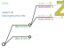

3 Basic decision problems
\[ \DeclarePairedDelimiters{\set}{\{}{\}} \]
Decision Theory analyses any decision-making problem in terms of nested or sequential basic or minimal decision problems. The assembly-line scenario of the introduction 1 is an example.
1 Graphical representation and elements
A basic decision problem can be represented by a diagram like this:

It has one decision node, usually represented by a square , from which the available decisions depart as lines. Each decision leads to an uncertainty node, usually represented by a circle , from which the possible outcomes depart as lines. Each outcome leads to a particular utility value. The uncertainty of each outcome is quantified by a probability.
A basic decision problem is analysed in terms of these elements:
- Agent, and background or prior information. The agent is the person or device that has to make the decision. An agent always possess (or has been programmed with) specific background information that is used and taken for granted in the decision-making process. This background information determines the probabilities and utilities of the outcomes, together with other available data and information. Since different agents typically have different background information, we shall somehow conflate agents and prior information.
We’ll use the neutral pronouns it/its when referring to an agent, since an agent could be a person or a machine.
Decisions, also called courses of actions, available to the agent. They are assumed to be mutually exclusive and exhaustive; this can always be achieved by recombining them if necessary, as we’ll discuss later.
Outcomes of the possible decisions. Every decision can have a different set of outcomes, or some outcomes can appear for several or all decisions (in this case they are reported multiple times in the decision diagram). Note that even if an outcome can happen for two or more different decisions, its probabilities can still be different depending on the decision.
Probabilities for each of the outcomes. Their values typically depend on the background information, the decision, and the additional data.
Utilities: the gains or losses associated with each of the possible outcomes. Their values also depend on the background information, the decision, and the additional data.
Data and other additional information, sometimes called evidence. They differ from the background information in that they can change with every decision instance made by the same agent, while the background information stays the same. In the assembly-line scenario, for example, the test results could be different for every new electric component.
Note that it is not always the case that the outcomes are unknown and the data are known. As we’ll discuss later, in some situations we reason in hypothetical or counterfactual ways, using hypothetical data and considering outcomes which have already occurred.
Some of the decision-problem elements listed above may need to be in turn analysed by a decision sub-problem. For instance, the utilities could depend on uncertain factors: thus we have a decision sub-problem to determine the optimal values to be used for the utilities of the main problem. This is an example of the modular character of decision theory.
We shall soon see how to mathematically represent these elements.
The elements above must be identified unambiguously in every decision problem. The analysis into these elements greatly helps in making the problem and its solution well-defined.
An advantage of decision theory is that its application forces us to make sense of an engineering problem. A useful procedure is to formulate the general problem in terms of the elements above, identifying them clearly. If the definition of any of the terms involves uncertainty of further decisions, then we analyse it in turn as a decision sub-problem, and so on.
Suppose someone (probably a politician) says: “We must solve the energy crisis by reducing energy consumption or producing more energy”. From a decision-making point of view, this person has effectively said nothing whatsoever. By definition the “energy crisis” is the problem that energy production doesn’t meet demand. So this person has only said “we would like the problem to be solved”, without specifying any solution. A decision-theory approach to this problem requires us to specify which concrete courses of action should be taken for reducing consumption or increasing productions, and what their probable outcomes, costs, and gains would be.
2 Inference, utility, maximization
The solution of a basic decision-making problem can be roughly divided into three main stages: inference, utility assessment, and expected-utility maximization.
Inference is the stage where the probabilities of the possible outcomes are calculated. Its rules are given by the Probability Calculus. Inference is independent from decision: in some situations we may simply wish to assess whether some hypotheses, conjectures, or outcomes are more or less plausible than others, without making any decision. This kind of assessment can be very important in problems of communication and storage, and it is specially considered by Information Theory.
The calculation of probabilities can be the part that demands most thinking, time, and computational resources in a decision problem. It is also the part that typically makes most use of data – and where data can be most easily misused.
Roughly half of this course will be devoted in understanding the laws of inference, their applications, uses, and misuses.
Utility assesment is the stage where the gains or losses of the possible outcomes are calculated. Often this stage requires further inferences and further decision-making sub-problems. The theory underlying utility assessment is still much underdeveloped, compared to probability theory.
Expected-utility maximization is the final stage where the probabilities and gains or costs of the possible outcomes are combined, in order to determine the optimal decision.